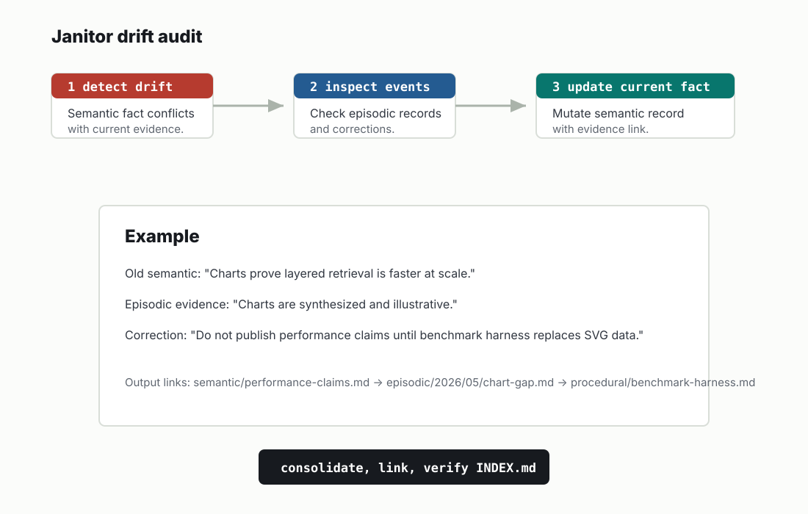

Lifecycle
Append, mutate, consolidate
The layer determines how memory is allowed to change. Some records are living documents; others are evidence that should only gain corrections.
Append vs mutate matrix
| Layer | Default | Rule |
|---|---|---|
| Identity | Mutate with evidence | Append only when preserving correction history matters. |
| Semantic | Mutate stable fact | Append dated evidence in episodic before major changes. |
| Episodic | Append by default | Never silently rewrite event history. |
| Procedural | Mutate current runbook | Link major process shifts to decisions. |
| Reference | Mutate verification metadata | Append source change notes when provenance matters. |
| Working | Mutate or delete | Consolidate before expiry. |
| Decisions | Supersede | Do not rewrite accepted rationale. |

Janitor